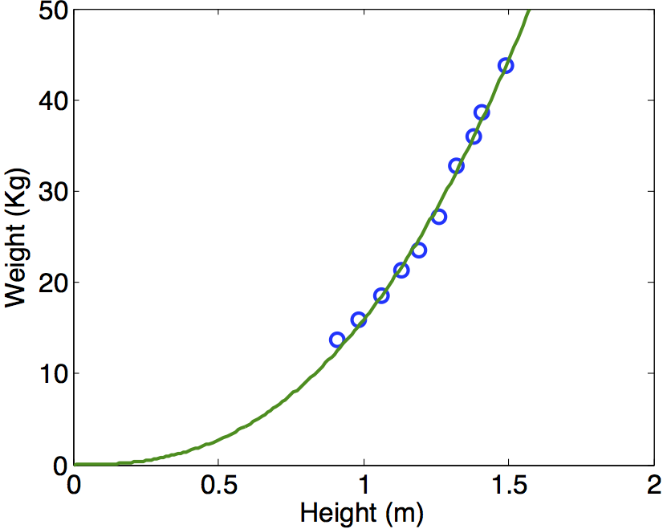
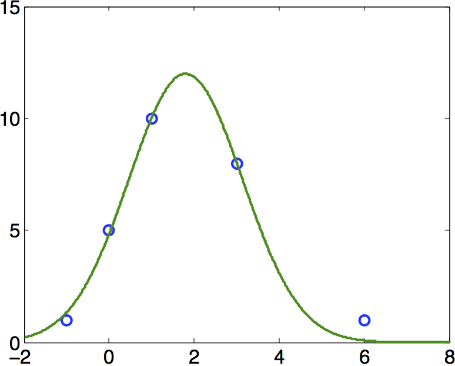
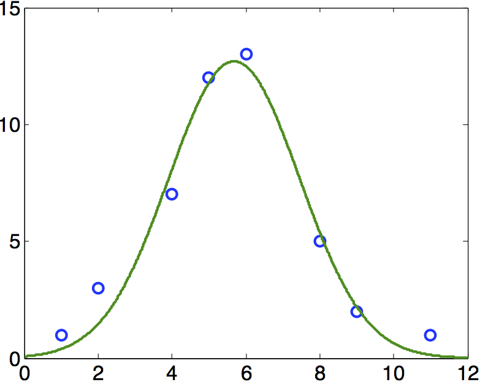
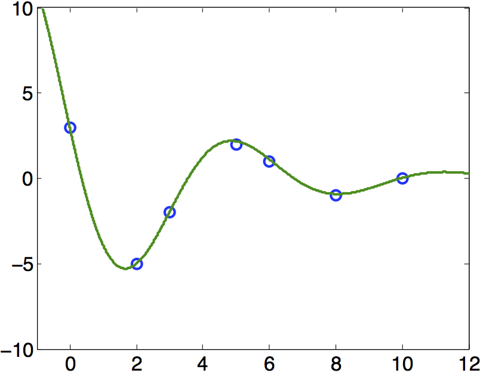
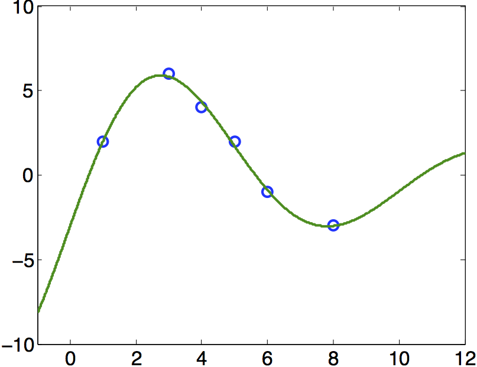

COMPUTER PROBLEMS 4.5
\(\def\ds{\displaystyle} \)
1 (a) Each Gauss-Newton step is \(x^{k+1}=x^k+v^k\), where
\(Dr^TDrv^k=-Dr^Tr\). The definition of \(r\) and \(Dr\) are given in the solution of
Exercise 4.4.1(a). The iteration converges to \((\overline{x},\overline{y})=
(0.4106,0.0555)\) after about 15 steps.
1 (b) Similar to (a). The definition of \(r\) and \(Dr\) are given in the solution of
Exercise 4.4.1(b). The iteration converges to \((\overline{x},\overline{y})=
(0.2755,0.0000)\) after about 10 steps.
3 (a) We apply the Gauss-Newton Method to minimize the sum of
the squares of the residuals
\begin{eqnarray*}
r_1(x,y,K)&=&\sqrt{(x-x_1)^2+(y-y_1)^2}-(R_1+K)\\
r_2(x,y,K)&=&\sqrt{(x-x_2)^2+(y-y_2)^2}-(R_2+K)\\
r_3(x,y,K)&=&\sqrt{(x-x_3)^2+(y-y_3)^2}-(R_3+K)\\
r_4(x,y,K)&=&\sqrt{(x-x_4)^2+(y-y_4)^2}-(R_4+K). \\
\end{eqnarray*}
The derivative is
\[ Dr =
\left[\begin{array}{ccc}
\frac{x-x_1}{S_1}&\frac{y-y_1}{S_1}&-1\\
\frac{x-x_2}{S_2}&\frac{y-y_2}{S_2}&-1\\
\frac{x-x_3}{S_3}&\frac{y-y_3}{S_3}&-1\\
\frac{x-x_4}{S_4}&\frac{y-y_4}{S_4}&-1\\
\end{array}\right]\]
where
\(S_i=\sqrt{(x-x_i)^2+(y-y_i)^2}\).
From initial guess \((x,y,K)=(0,0,0)\), Gauss-Newton converges within
about five steps to \(x=0,y=-0.5862\) and \(K=0.3296\).
3 (b) Similar to (a). The Gauss-Newton method converges within
about five steps to \(x=0.5569, y=0\), and \(K=1.2880\).
5 We fit a power law \(W=c_1H^{c_2}\) to the 10 height/weight
data points \((H_1,W_1),\ldots, (H_{10}, W_{10})\) from Example 4.10.
To solve the true least squares problem, we avoid
linearizing the model and apply the Gauss-Newton method to minimize the
sum of the squares of
\begin{eqnarray*}
r_1(c_1,c_2)&=&c_1H_1^{c_2}-W_1\\
&\vdots\\
r_{10}(c_1,c_2)&=&c_1H_{10}^{c_2}-W_{10} \\
\end{eqnarray*}
The Jacobian is
\[ Dr =
\left[\begin{array}{cc}
H_1^{c_2}&c_1H_1^{c_2}\ln H_1\\
\vdots&\vdots\\
H_{10}^{c_2}&c_1H_{10}^{c_2}\ln H_{10}\\
\end{array}\right].\]
Using initial guess \((c_1,c_2)=(10,4)\), the Gauss-Newton Method converges
to the solution \(c_1=15.9\) and \(c_2=2.53\) after about 5 steps. The RMSE
is \(0.755\). The best fit solution \(W=c_1H^{c_2}\) is plotted below.

7 Levenberg-Marquardt is applied to the residuals
\({\ds r=
\left[\begin{array}{c}
c_1H_1^{c_2}-W_1\\
\vdots\\ c_1H_{10}^{c_2}-W_{10}
\end{array}\right]}\) with Jacobian matrix
\({\ds Dr=
\left[\begin{array}{cc}
H_1^{c_2}& c_1H_1^{c_2}\ln H_1\\
\vdots&\vdots \\
H_{10}^{c_2}& c_1H_{10}^{c_2}\ln H_{10}
\end{array}\right]}\). For example, using starting guess \(c_1=10, c_2=2\) and fixed \(\lambda=1\), Levenberg-Marquardt converges to the solution \(c_1=15.9, c_2=2.53\). The RMSE
is \(0.755\).The best fit curve is shown above in Computer Problem 5.
9 (a) Levenberg-Marquardt with initial guess \(c_1=5, c_2=0.5, c_3=1\) and fixed \(\lambda=1\)
converges to parameters \(c_1=11.9935, c_2=0.2796, c_3=1.8023\). The best fit curve \(y=c_1e^{-c_2(t-c_3)^2}\) is plotted below. The RMSE \(=0.4413\).

9 (b) Levenberg-Marquardt with initial guess \(c_1=5, c_2=0.5, c_3=1\) and fixed \(\lambda=1\)
converges to parameters \(c_1=12.7028, c_2=0.1596, c_3=5.6828\). The best fit curve \(y=c_1e^{-c_2(t-c_3)^2}\) is plotted below. The RMSE \(=0.8028\).

11 (a) Levenberg-Marquardt is applied to the residuals
\({\ds r=
\left[\begin{array}{c}
c_1e^{-c_2t_1}\cos (c_3t_1+c_4)-y_1\\
\vdots\\ c_1e^{-c_2t_7}\cos (c_3t_7+c_4)-y_7
\end{array}\right]}\) with Jacobian matrix
\({\ds Dr=
\left[\begin{array}{cccc}
e^{-c_2t_1}C_1 & -c_1t_1e^{-c_2t_1}C_1&
-c_1t_1e^{-c_2t_1}S_1& -c_1e^{-c_2t_1}S_1\\
\vdots&\vdots &\vdots&\vdots\\
e^{-c_2t_7}C_7 & -c_1t_7e^{-c_2t_7}C_7&
-c_1t_7e^{-c_2t_7}S_7& -c_1e^{-c_2t_7}S_7
\end{array}\right]}\) \nl
where \(C_i\) and \(S_i\) represent \(\cos (c_3t_i+c_4)\) and \(\sin (c_3t_i+c_4)\), respectively. For example, using starting guess \(c_1=1, c_2=0, c_3=c_4=1\) and fixed \(\lambda=0.01\), Levenberg-Marquardt converges to the solution \(c_1=8.67, c_2=0.27, c_3=0.98, c_4=1.23\). The RMSE
is \(0.1027\). The best fit curve is shown below.

11 (b) Levenberg-Marquardt is applied to the residuals
as in part (a). For example, using starting guess \(c_1=10, c_2=0, c_3=c_4=1\) and fixed \(\lambda=0.01\), Levenberg-Marquardt converges to the solution \(c_1=-8.68, c_2=0.13, c_3=0.62, c_4=1.22\). The RMSE
is \(0.1998\). The best fit curve is shown below.
